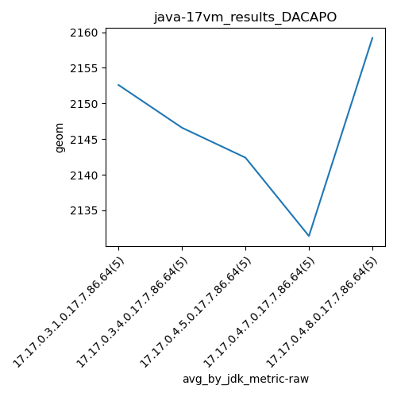
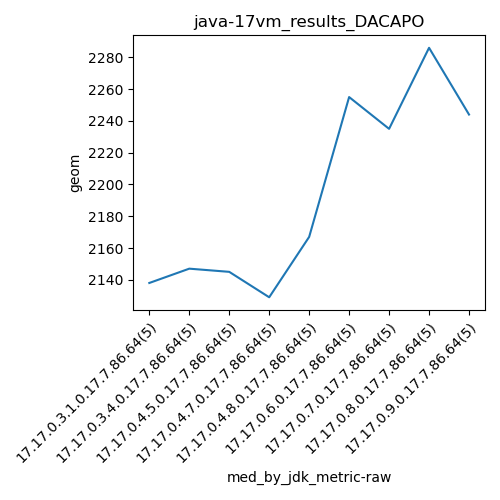
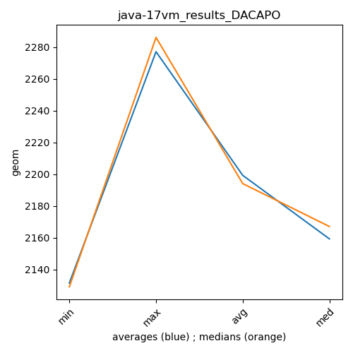

java-17 DACAPO
Context at bottom
/home/jvanek/git/benchmarks-in-nested-virtualisation-toolchain/final_results/vm_results/vm_results_RADARGUNs1
java-17
DACAPO
/home/jvanek/git/benchmarks-in-nested-virtualisation-toolchain/final_results/vm_results/vm_results_RADARGUNs3
java-17
DACAPO
/home/jvanek/git/benchmarks-in-nested-virtualisation-toolchain/final_results/vm_results/vm_results_DACAPO
java-17
DACAPO
vm_results_DACAPO
final score
Expected number of java-17 JDKs: 9
1st avgmed_alljdks_metric:
/home/jvanek/git/benchmarks-in-nested-virtualisation-toolchain/final_results/result_processing.py /home/jvanek/git/benchmarks-in-nested-virtualisation-toolchain/final_results/vm_results/vm_results_DACAPO geom False
values: [2138, 2133, 2170, 2186, 2136, 2105, 2156, 2147, 2180, 2145, 2157, 2145, 2101, 2181, 2128, 2096, 2129, 2176, 2135, 2121, 2173, 2167, 2122, 2137, 2197, 2255, 2214, 2320, 2292, 2208, 2191, 2235, 2518, 2205, 2236, 2230, 2323, 2293, 2244, 2286, 2226, 2262, 2296, 2225, 2244]

Expected number of iterations: 5
final number of values: 45 out of 45
Pass rate: 100.0%
values: (2096, 2518, 2199.2, 2181)

** accuracy from all jdks and runs
more is better
MIN: 2096
MAX: 2518
AVG: 2199.2
MED: 2181
Relative differences 1:
MIN-MAX: 17.0 %
MIN-AVG: 5.0 %
MIN-MED: 4.0 %
MAX-MIN: -20.0 %
MAX-AVG: -14.0 %
MAX-MED: -15.0 %
AVG-MED: -1.0 %
stored to java-17.properties. sort | uniq that!
2nd avgmed_by_jdk_metric:
values: [2152.6, 2146.6, 2142.4, 2131.4, 2159.2, 2257.8, 2277.0, 2275.2, 2250.6]

values: [2138, 2147, 2145, 2129, 2167, 2255, 2235, 2286, 2244]

values: (2131.4, 2277.0, 2199.2, 2159.2)
values: (2129, 2286, 2194.0, 2167)

** accuracy from all jdks where runs were avged
more is better
MIN: 2131.4
MAX: 2277.0
AVG: 2199.2
MED: 2159.2
Relative differences 1:
MIN-MAX: 6.0 %
MIN-AVG: 3.0 %
MIN-MED: 1.0 %
MAX-MIN: -7.0 %
MAX-AVG: -4.0 %
MAX-MED: -5.0 %
AVG-MED: -2.0 %
stored to java-17.properties. sort | uniq that!
** accuracy from all jdks where runs were medianed
more is better
MIN: 2129
MAX: 2286
AVG: 2194.0
MED: 2167
Relative differences 1:
MIN-MAX: 7.0 %
MIN-AVG: 3.0 %
MIN-MED: 2.0 %
MAX-MIN: -7.0 %
MAX-AVG: -4.0 %
MAX-MED: -5.0 %
AVG-MED: -1.0 %
stored to java-17.properties. sort | uniq that!
/home/jvanek/git/benchmarks-in-nested-virtualisation-toolchain/final_results/vm_results/vm_results_J2DBENCH
java-17
DACAPO
/home/jvanek/git/benchmarks-in-nested-virtualisation-toolchain/final_results/vm_results/vm_results_SPECJBB
java-17
DACAPO
/home/jvanek/git/benchmarks-in-nested-virtualisation-toolchain/final_results/vm_results/vm_results_JMH
java-17
DACAPO
pass rates:
vm_results_DACAPO=100.0%
Context:
- vm_results
- DACAPO